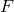

Learning circulant sensing kernels
Background
In signal acquisition, Toeplitz and circulant matrices are widely used as sensing operators. They correspond to discrete convolutions and are easily or even naturally realized in various applications. For compressive sensing, recent work has used random Toeplitz and circulant sensing matrices and proved their efficiency in theory, by computer simulations, as well as through physical optical experiments.
Learn the sensing kernel
One condition for sparse signal recovery from compressive sensing is incoherence between sensing matrix and sparsifying matrix. Given a sparsifying matrix or dictionary  , our method aims at learning a circulant sensing matrix/operator to achieve low coherence.
, our method aims at learning a circulant sensing matrix/operator to achieve low coherence.
We use circulant matrix/operator is due to signal acquisition consideration particular for large-scale data. A circulant matrix can be written as , where  is discrete Fourier matrix, so performing to a signal can be realized by a fast Fourier transform (FFT), an inverse FFT, and some component-wise multiplication. Similar argument applies to 2D circulant operator by noting it can be written as , where  is a 2D Fourier transform.
is a 2D Fourier transform.
For one-dimensional signal, our method learns a partial circulant matrix by solving
where , is a circulant matrix, and is a row-selecting matrix.
For two-dimensional signal, it learns a partial circulant operator by solving
where , is a 2D circulant operator, and  is a downsampling operator.
is a downsampling operator.
The above learning processes are carried out in two steps. The first step learns a circulant matrix/operator, and the second step learns a downsampling matrix/operator. Learning a circulant matrix/operator is equivalent to learning a kernel, and thus it can be easily done. The two steps can be repeated many times. However, the optimization problem about the downsamplers is difficult. We only perform the two steps one time. One can also choose or randomly, which works well on signals without dominating frequency.
In addition, we learn and simultaneously by alternatively updating them. The coupled learning method can be found in Algorithm 2 of our report.
Selected numerical results
Results of tests using Gaussian random basis (left) and Fourier basis (right) as the sparsify basis
Results of real image tests using the images’ 8x8 patches to form dictionaries (left: 16/64 measurements; right: 24/64 measurments)
Matlab codes
a test of 1D signal recovery with synthetic dictionaries and a randomly generated sparse signal
a test that illustrates how to apply a 2D circulant operator to image patches and recover a 2D image from circulant measurements
a test that demonstrates image recovery using a fullsize sensing operator and dictionary; see fullsize recovery
Citation
Y. Xu, W. Yin, and S. Osher. Learning circulant sensing kernels. Inverse Problems and Imaging, 8(3), 901–923.